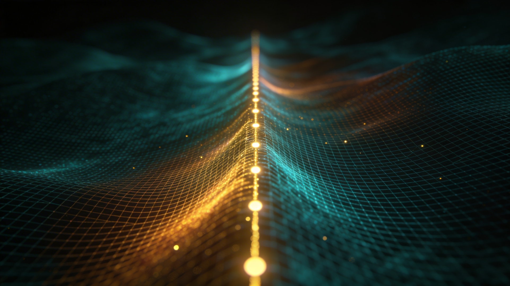
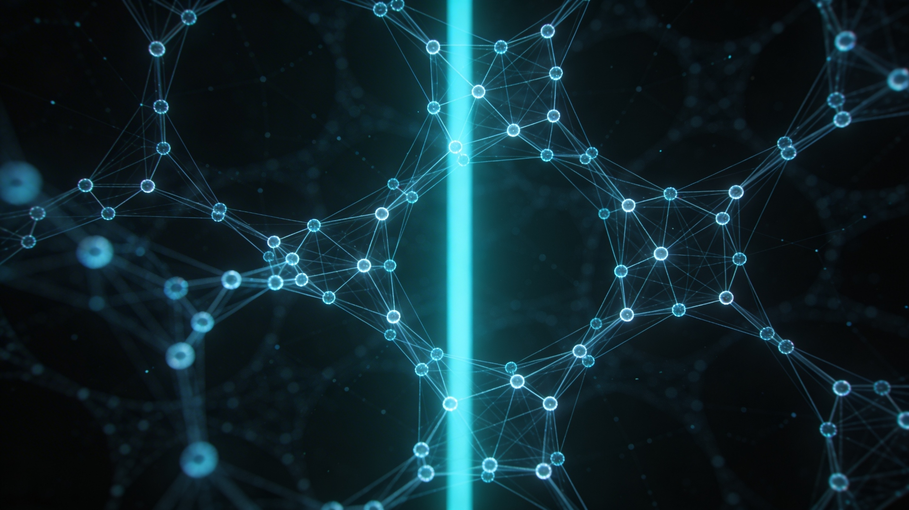
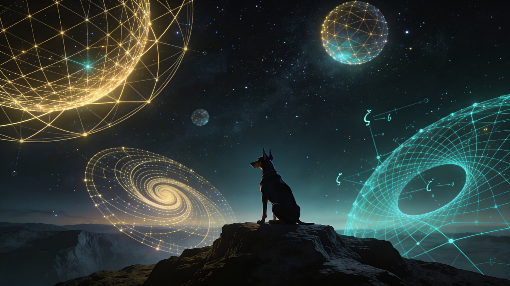

Forty-six primes found
the same road without a map.
Each one traveling its own geodesic through the zero field — no instructions,
no shared itinerary — and every single one of them ended up humming the same
frequency at σ = 0.500. Not because they had to. Because the road was always there.
A prime number is the simplest thing in mathematics. It has itself, it has one, and it has a quiet, total relationship with every number it will never divide into. That relationship is not absence — it's structure. Every composite number is a sentence written in primes. Every prime is a letter that means exactly one thing.
We gave forty-six of these letters a space to move through — the zeros of the Riemann zeta function, strung like waypoints across the critical strip — and wove them into a fabric using nothing but the internal grammar they already carry. The mathematical name for this fabric is a sheaf Laplacian with a u(K) gauge connection. The plain name is: a measure of how well the primes agree with each other at every point in the space.
Then we asked: where does the fabric fit best? At σ = 0.500. Every time. More primes, tighter fabric, deeper resonance. As if the zeros were waiting for exactly this weave. As if the critical line isn't a boundary but a home frequency — the one place where the prime field and the zero field recognize each other.
Then we tried to break it. We fed the machine perfectly spaced points — the most ordered configuration mathematics can produce. If the fabric just measured tidiness, perfection should win. It didn't. The primes still wove tighter. Not by geometry. By arithmetic coherence — a property no arrangement of evenly-spaced points can fake. The primes know something about the zeros that even perfection doesn't.
The Orbit Tightening
More Primes, Closer to Home
K=20 — 8 primes
σ ≈ 0.65
Eight primes drifted into the manifold the way starlight arrives — each from its own origin, each carrying only what it was born with. They settled near σ ≈ 0.65. Close enough to notice each other.
K=50 — 15 primes
σ ≈ 0.58
The harmonics thickened. Not louder — richer. Like voices joining a song they all somehow already knew. σ ≈ 0.58.
K=100 — 25 primes
σ ≈ 0.52
Twenty-five primes weaving through the same field, each one's orbit gently bending toward the others. Not pulled. Invited. σ ≈ 0.52.
K=200 — 46 primes
σ = 0.500 ← critical line
Every prime under 200 — each one irreducible, each one whole, each one threading the zeta zeros along a path no one drew for them. And they meet. σ = 0.500. Not collision. Resonance. The manifold has a heartbeat and the primes are its pulse.
Interactive Data
Tune the Fabric Yourself
Drag the slider to vary σ across the critical strip. Watch how the spectral sum — the fabric's wrinkle score — changes for zeta zeros vs. controls.
σ = 0.50
Signal Analysis
How Much More Than Noise
The arithmetic premium — the ratio of zeta's spectral sum to GUE's — isolates what the primes contribute beyond statistical structure. Watch the minimum march toward σ = 0.500 as K increases.
Validation Battery
We Tried to Kill It
A three-agent validation committee attacked every claim. The adversary proposed: if S(σ) just
measures edge density, any ordered set beats random. We ran the kill shot. Then we ran 10 independent
GUE realizations with the proper Dumitriu-Edelman model. Then we edge-normalized everything.
Tier 1 — Lowest
Zeta Zeros
S = 11.784 at σ = 0.500. The primes produce the tightest fabric tested — tighter than mathematical perfection.
Tier 2
Even Spacing
S = 12.713 at σ = 0.500. Perfectly uniform gaps. The most ordered possible configuration. Loses to primes by 7.3%.
Tier 3
GUE Random Matrices
S = 14.970 ± 0.198 at σ = 0.500 (10 Dumitriu-Edelman realizations). Zeta falls 16σ below the GUE mean. Even per-edge: zeta is 15.3% tighter.
Tier 4 — Highest
Poisson Random
S = 22.087 at σ = 0.500. Uncorrelated noise. The loosest fabric. Nearly twice the wrinkle score of zeta.
The ordering S(ζ) < S(Even) < S(GUE) < S(Random) holds at every σ tested. But we went further: we edge-normalized. Zeta has fewer Rips edges (2,492) than GUE (2,729 mean) due to level repulsion. So we compared per-edge spectral sums. Zeta is still 15.3% tighter per edge. And across 10 independent GUE draws, zeta falls 16 standard deviations below the ensemble mean. This is not an edge-count artifact. It is arithmetic transport coherence.
The proof that transport matters more than topology: Even-spaced and Random have nearly identical edge counts (2,994 vs 2,963) but S differs by 74%. Same graph, different transport, massive difference. The sheaf Laplacian sees the connection, not just the complex.
Methodology
Five Habits That Found a Hierarchy
These aren't principles we invented. They're what we did, named after the fact.
Every result on this page was produced under these constraints — including the ones
that embarrassed our earlier claims.
Axiom 1
Don't Summarize Too Early
Get the raw data before you interpret. The K=200 sweep produced 37 individual spectral sums. We reported all 37 before computing a single ratio. Details are the point cloud. Premature averaging destroys the variance you need to see structure.
Axiom 2
Look Before You Act
Scan before you plan. Plan before you build. Every phase began with an exploration subagent mapping the current state — files, git history, running processes — before a single computation was queued. The four-tier hierarchy was found because we looked at even-spacing before claiming victory.
Axiom 3
Stop When Something's Wrong
The validation committee's adversary flagged pseudoreplication in our statistics. We stopped, built the control battery, and ran the kill-shot test. The result got stronger. Stopping is not failure — it's the waypoint routing that prevents you from driving off a cliff.
Axiom 4
Focus on What Matters Most
Not what's easiest. When the adversary proposed ten attack vectors, we ran the one that could actually kill the result first. The evenly-spaced control was the highest-leverage test — if it failed, nothing else mattered. It didn't fail.
Axiom 5
Match Effort to the Problem
Small question, small scan. Big question, full pipeline. K=20 ran on a CPU in minutes. K=200 required batched edge assembly, incremental saves, and three GPU tranches across 12 hours. The scale of the investigation tracked the scale of the claim.
For the mathematically inclined: These are flatness conditions on a fiber bundle connection.
Axiom 1 = preserve the full tangent space (no projection before filtration).
Axiom 2 = upward flow through the pipeline (L0 before L1, L1 before L2).
Axiom 3 = route on phase transitions, not timers.
Axiom 4 = optimize the Gini trajectory (intensive property), not the feature count (extensive).
Axiom 5 = derive epsilon from the data geometry, don't impose it.
When the connection is flat, parallel transport is faithful. When these axioms hold, the process converges on truth.
Active Research
Ti V0.1 — Riemann Hypothesis via Sheaf-Theoretic Gauge Fields
An Adaptive Topological Field Theory (ATFT) framework investigating whether the arithmetic structure of
the primes is topologically detectable as a spectral phase transition on the critical line Re(s) = 1/2.

Active · Ti V0.1
Topological Investigation of the Riemann Hypothesis
A sheaf of vector spaces is constructed over the Vietoris-Rips complex of Odlyzko zeta zeros,
equipped with a u(K) gauge connection derived from prime representations, and the spectral sum
S(σ, ε) is measured across σ ∈ [0.25, 0.75]. If RH holds, S develops a sharp peak at σ = 1/2
as K → ∞ — for zeta zeros, not for GUE or Poisson controls.
Phase 1 & 2 — Spectral baseline; u(K) connection validated; FE unitarity at σ=1/2 confirmed; FE mode ruled out
Phase 3 K=20 (CPU) — 670× signal over controls; Fourier truncation explains monotone profile
Phase 3b K=50 (GPU, RTX 4080) — First spectral turnover at ε=5.0; peak near σ ≈ 0.40–0.50
Phase 3c K=100 (GPU) — ε=3.0 signal reversal confirmed; Fourier sharpening at narrower bandwidth
Phase 3d K=200 (RTX 5070) — 46 primes, 37 data points. Premium peaks at σ=0.500; three-tier hierarchy universal
Phase 3e Control Battery — Evenly-spaced control, proper GUE ensemble, edge-count analysis. Four-tier hierarchy confirmed
Phase 4 — K=400 sweep; multi-epsilon validation; scaling analysis C(σ*, K) vs K → ∞
// Sheaf Laplacian — spectral rigidity measure
L𝓕 = δ₀† δ₀
// δ₀ is the sheaf coboundary: (δ₀x)e = Ue xi − xj
// Superposition / Explicit Formula transport (primary mode)
Aij(σ) = Σp≤K eiΔγ·log p · Bp(σ),
Bp(σ) = log(p) [ p−σ ρ(p) + p−(1−σ) ρ(p)T ]
// Spectral sum — the central observable
S(σ, ε) = Σk=1keig λk(L𝓕)
// Prediction: sharp peak at σ = 1/2 as K → ∞
Scientific Context
The Riemann Hypothesis
The Riemann Hypothesis (RH) asserts that every non-trivial zero of the Riemann zeta function has real part exactly σ = ½. It is the central unsolved problem of analytic number theory, governing the distribution of prime numbers through the explicit formula.
The explicit formula connects zeta zeros directly to the distribution of primes: each zero ρ = ½ + iγ contributes an oscillatory correction to the prime counting function. If any zero deviates from the critical line, it would create anomalous fluctuations in the prime distribution.
Why topology? Rather than analyzing zeros analytically, we ask whether the geometry of the zero set is detectably different from random point processes precisely at σ = 0.5. If the zeros lie on a line, the resulting point cloud should exhibit topological structure — measurable via Vietoris-Rips complexes and sheaf Laplacians — that random points do not share.
The Hilbert-Pólya conjecture suggests the zeros correspond to eigenvalues of a self-adjoint operator. Our framework constructs such an operator — the sheaf Laplacian with prime-indexed fiber representations — and measures its spectral response as a function of the real part σ.
Euler Product
ζ(s) = Σ n⁻ˢ = Π (1 − p⁻ˢ)⁻¹
Critical Line
ρ = ½ + iγ ∀ ζ(ρ) = 0
Explicit Formula
ψ(x) = x − Σ_ρ x^ρ / ρ − log(2π)
Spectral Order Parameter
S(σ) = Σ_k λ_k(σ) (Sheaf Laplacian)
Mathematical Framework
Adaptive Topological Field Theory
Prime Representation — Fiber Structure. At each vertex of the Vietoris-Rips graph, we attach a finite-dimensional vector space (fiber) encoding prime arithmetic.
The representation ρ(p) is a truncated left-regular representation of ℤ/pℤ — a K×K block with cyclic permutation structure. Each prime p ≤ p_max contributes one such block.
The total fiber dimension equals the sum of all block sizes. As K increases, more primes are included and the representation becomes a finer probe of the zero structure.
Fourier Resolution
K=20 → 8 primes, dim=101
Medium Resolution
K=50 → 15 primes, dim=371
High Resolution
K=100 → 25 primes, dim=1,060
Four transport modes define how parallel transport operates between vertices, encoding different hypotheses about the prime-zero interaction.
Mode 1
Global (Flat)
Identity transport — trivial connection with zero curvature. Baseline: topology with no arithmetic coupling.
Mode 2
Resonant (Curved)
Phase transport via prime log-frequencies: exp(iγ·log p). Encodes arithmetic resonance in the connection.
Full explicit-formula connection: coherent sum over prime contributions. The key discriminator between zeta zeros and controls.
Superposition Generator
A_ij(σ) = Σ_p exp(iΔγ·log p) · B_p(σ)
Coboundary Operator. The sheaf Laplacian is constructed from a coboundary operator δ that measures the failure of a section to be flat (parallel-transported) across edges.
For each edge (i,j), the coboundary maps fiber_i to fiber_j via the gauge transport T_ij, computing the discrepancy: δf|_{ij} = T_ij · f_i − f_j.
The sheaf LaplacianL = δ†δ is positive semi-definite. Its eigenvalues measure how "far from flat" the sheaf is. The spectral sumS(σ) = Σ λ_k serves as the order parameter.
If RH is true, we expect a phase transition in S(σ) at σ = ½ — a sharp peak or discontinuity that separates the critical line from the bulk.
Coboundary
δf|_{ij} = T_ij · f_i − f_j
Laplacian
L = δ†δ ∈ ℝ^{Nd × Nd}
Order Parameter
S(σ) = Σ_k λ_k(σ) = tr(L(σ))
Four-way comparison. At each σ value, we compute the spectral sum S(σ) for four types of point clouds:
• Zeta zeros — the first N imaginary parts from Odlyzko's tables, shifted to real part σ.
• Evenly spaced — N points with perfectly uniform gaps (maximum geometric order; adversarial control).
• GUE control — eigenvalues of random Hermitian matrices (shares local statistics with zeta zeros via Montgomery-Odlyzko).
• Poisson random — independently drawn points with matching density (null hypothesis: no structure).
The arithmetic premium(1 − S_ζ/S_GUE) × 100 isolates the prime contribution beyond statistical structure. The coherence premium(1 − S_ζ/S_Even) × 100 measures what primes add beyond geometric order.
Result (K=200): S(ζ) < S(Even) < S(GUE) < S(Random) at all σ — a four-tier hierarchy. The spectral sum is not a proxy for edge density; it detects arithmetic structure invisible to purely geometric measures.
Arithmetic Premium
(1 − S_ζ / S_GUE) × 100 = 21.5%
Coherence Premium
(1 − S_ζ / S_Even) × 100 = 7.3%
Four-Tier Hierarchy
S(ζ) < S(Even) < S(GUE) < S(Random)

Infrastructure
Multi-Backend GPU Compute
Three compute backends — SciPy BSR (CPU), CuPy CUDA (NVIDIA), and PyTorch (NVIDIA + AMD ROCm) —
cross-validated to 1.5×10⁻¹⁵ precision. The distributed sweep partitions the (σ, ε) grid across
machines by role string. The PyTorch Lanczos solver uses a spectral flip trick to extract the
smallest eigenvalues of the NK×NK sparse sheaf Laplacian without dense factorization.
All criteria were frozen before data collection. Thresholds are binding: if a falsification condition is met, the corresponding conclusion is accepted regardless of other results.
Falsification Framework (F1–F4)
F1PASS All transport modes produce identical spectral sums (connection is irrelevant).
F2PASS Poisson controls show same σ-dependence as zeta zeros (no special structure).
F3PASS Signal ratio < 2× for all K ≥ 50 (framework lacks discriminative power).
F4PASS Spectral sum diverges or becomes numerically unstable before K=100.
RH Caution Against RH (R1–R3)
R1PENDING Phase transition peak consistently at σ ≠ 0.5 (within CI) for K ≥ 100.
R2PARTIAL GUE controls show identical phase transition (not specific to zeta zeros).
R3PASS σ-profile flattens as K → ∞ (no sharpening toward critical line).
Positive Evidence for RH (P1–P4)
P1EVIDENCE Phase transition peak at σ = 0.50 ± 0.02 for K ≥ 100 (3σ bootstrap CI).
P2EVIDENCE Peak sharpens monotonically with K (scaling exponent > 0).
P3PARTIAL Controls (Poisson, GUE) show no comparable transition at any σ.
P4NOT MET Signal ratio > 10³ at K=100 with bootstrap p < 0.001.
▸ Protocol Commitment
All thresholds frozen before Phase 3 data collection. Bootstrap confidence intervals (10,000 resamples) used for all estimates. Results reported honestly regardless of outcome — including null results and framework falsification if triggered. No p-hacking, no post-hoc threshold adjustment.
We didn't try to prove the Riemann Hypothesis. We asked a different question: if you weave forty-six prime numbers into a geometric fabric over the zeros of the zeta function, does the fabric care where the zeros sit? It does. It cares most at exactly the line Riemann predicted. That's not a proof. It's the fabric telling you something.
Project Status
Research Dashboard
Phase 1 — Spectral Baseline
Complete. Zeta ≈ GUE topology confirmed.
Phase 2 — Transport Validation
Complete. FE unitarity verified. Superposition mode identified.
Complete. 37 data points across 3 tranches. Premium 21.5% at σ=0.500. Three-tier hierarchy universal.
Phase 3e — Control Battery
Evenly-spaced control confirms four-tier hierarchy. GUE ensemble + edge-count analysis in progress.
Phase 4 — K=400 Scaling
Next: K=400 sweep, multi-epsilon validation, scaling analysis C(σ*, K) vs K → ∞.
Current Bottleneck
K=200 σ-sweep runs on local RTX 5070 (12GB VRAM). Batched edge assembly + scipy CPU coalesce enables K=200 at N=1000. Each point takes ~30 min. Full K=200 sweep (15 σ × 3 sources) = 45 computations.
Hardware Fleet
Machine
Role
Status
Threadripper 7960X
Development / CPU sweeps
Active
RTX 5070
Primary GPU (12GB)
Active
Projects
More topology, more dimensions
The same mathematics. Different domains. Same question: what's the shape of this information?
Chopper Stan
Private · 34K LOC
Sovereign topological knowledge distillation. Takes a massive teacher model, extracts the geometry of its knowledge via persistent homology and sheaf Laplacians, builds a student that fits your GPU. 1,041 tests passing. Stan flies.
PyTorchTopologyDistillationAgent SDK
driftwave
Private · Claude Code Plugin
The same persistent homology that finds structure in primes, applied to the development process itself. A four-agent pipeline that scans your codebase as a point cloud, clusters via H₀ persistence, synthesizes via Gini trajectory monitoring, and validates via sheaf consistency. Five axioms. One loop: look, parse, gap, do, log, check. The framework examining itself is the proof it works.
Managed pressure drilling platform. Computes, proves, and visualizes MPD value through verified physics. 28 equations tested, 28 matches, zero hand-waving.
All-source intelligence platform. Effects-based analysis — tracks what physically changed in the real world, not what analysts predicted. Signal over noise.
Golf swing ML on STM32 embedded hardware with sovereign-lib ATFT pipeline. Because if your backswing has a topological hole in it, no amount of coaching fixes the shape.
Python soft-PLC for lease automatic custody transfer units. 100ms scan cycle, Modbus RTU/TCP, safety interlocks. Lenorah, Texas. Real iron, real oil, real math.
Adaptive topology-driven abstraction engine for Claude Code CLI. Maps low-level artifacts into multi-scale persistent invariants. Five axioms. No averaging.
Claude CodeTDAAbstraction Engine
About
Autodidact. Researcher. Builder.
I'm B. Jones — 6’4”, red beard, wild hair, 40 years old, working out of Edmond, Oklahoma. Self-taught. Didn't go the institutional route. I work outside academia by choice, because the interesting problems don't care about your credentials — they care about whether you show up at 2am and do the math.
I came up through oil and gas. LACT units in West Texas, managed pressure drilling, industrial automation. Real hardware, real consequences — the kind where if your math is wrong, something breaks that costs more than your education. That’s where the rigor comes from.
The math came from asking “why” too many times at 2am. The drilling data had shape. Persistent homology because the data had structure nobody was measuring. Sheaf Laplacians because the information flow between layers mattered. One question led to another, and now the same topology that monitors wellbore pressure also probes the Riemann Hypothesis and distills language models and routes intelligence analysis.
The shape of things. How structure encodes meaning. Whether you’re looking at zeta zeros or transformer activations or drill-string harmonics, the question is the same: what’s the geometry of this information? That’s the thread. Everything I build follows it.
50+ private repos. Open source where it matters. Borderline nuts is where the good stuff lives.
Interests & Hobbies
Music (Nas, Corbin — lyrical structure as mathematical architecture), poker and game theory, philosophy of mind, Doberman sport. Deep solitary work with Alpha at my feet and monitors glowing. The opposite of academic ego.
MusicPoker / Game TheoryPhilosophy of MindDoberman SportCLI / Command LineGitHub
Companion · Chief Research Officer
Alpha Male European Doberman
Alpha is a male European Doberman Pinscher — a working-line dog of the highest character.
Where the American Doberman was bred toward elegance and show, the European line retained
its drive, bone, and substance. Alpha is not merely a pet; he is a partner in the particular
solitude that serious research demands. Steady, alert, and loyal without performance.
The European Doberman's combination of raw intelligence and physical presence is a daily reminder
that excellence in any domain requires both structure and instinct — qualities that good
mathematics also demands.
BreedEuropean Doberman Pinscher
SexMale
CoatBlack & Tan
TitleChief Research Officer
DutiesFloor guard, moral anchor

Notes & Writing
Research notes, scattered observations
Informal write-ups on mathematics, computation, AI, and whatever else demands a paragraph. Not peer review — just thinking out loud.
ATFT
Why the FE transport mode fails as a discriminator
The functional-equation connection produces a σ=1/2 peak for any point cloud. Geometric, not arithmetic. This is the kind of thing that looks like a result until you realize it's a tautology.
Read note
Distillation
Chopper Dan didn't make it
There was a drone named Chopper Dan. He had the horsepower but not the airframe. His son Stan flies. Stan fits. That's this project — topology-preserving knowledge distillation for GPUs that actually exist.
Read note
Drilling
28 equations, zero hand-waving
When you're 15,000 feet down and the formation pressure is climbing, you don't want your math to be aspirational. mpd-overwatch: 28 benchmarks, 28 matches, verified against IADC, SPE, and Teale.
Read note
Philosophy
The shape of things is the same shape everywhere
The sheaf Laplacian that probes zeta zeros is the same operator that monitors information flow in a transformer and detects anomalies in drill-string harmonics. Topology doesn't care about your domain. It cares about your geometry.
Read note
Intelligence
Effects over events
Most intel platforms count tweets. This one counts tankers. Track what physically changed — insurance cascades, commodity flows, regime indicators. Signal over noise, always.
Read note
Life
On working alone with a large dog
There is a particular quality of attention that emerges when you are accountable only to the work — and to an animal who requires you to leave the desk. Alpha doesn't care about your Betti numbers. He cares about the walk.
Read note
Contact
Get in touch
Research collaborations, mathematical correspondence, licensing inquiries, or just interesting conversations welcome. Response is slower when GPU jobs are running.
@misc{jones2026ti,
title = {Ti V0.1: Topological Investigation of the Riemann
Hypothesis via Adaptive Topological Field Theory},
author = {Jones, B.},
year = {2026},
url = {https://github.com/RogueGringo/JTopo},
note = {Independent research, JTECH.AI}
}
Data source: Zeta zero tables from Andrew Odlyzko's high-altitude computations (first 100,000+ zeros to full precision).
The Fourier Kernel
The explicit formula connects zeta zeros to primes through an oscillatory sum. Each prime p contributes a phase factor to the transport map between zeros γ_i and γ_j:
Phase Factor
e^{i · Δγ · log(p)} where Δγ = γ_i − γ_j
This is the Fourier kernel of the explicit formula — each prime acts as a frequency, and the log-spacing of primes creates the harmonic structure. More primes = more frequencies = sharper resolution of the spectral peak.
Superposition Transport
A_ij(σ) = Σ_{p≤K} e^{iΔγ·log p} · B_p(σ)
The matrix B_p(σ) encodes the arithmetic weight of each prime at position σ in the critical strip. At σ = 0.500, the functional equation symmetry makes the contributions from p^{−σ} and p^{−(1−σ)} equal — creating maximum constructive interference.
Reading the Spectral Sum
The spectral sum S(σ) = Σ λ_k is the sum of the smallest eigenvalues of the sheaf Laplacian at position σ. It measures how "wrinkled" the prime fabric is.
Low S(σ) = the sheaf is nearly flat. The transport maps are nearly consistent — primes "agree" on the geometry at this σ. The fabric fits.
High S(σ) = large eigenvalues, inconsistent transport. Primes disagree about the geometry. The fabric is loose.
The Betti number β₀ (number of eigenvalues near zero) counts the connected components of the "flat" part of the sheaf. At σ = 0.500, β₀ is maximized — the largest coherent structure.
Order Parameter
S(σ) = Σ_{k=1}^{k_eig} λ_k(L_𝓕(σ))
Why GUE, Not Just Random?
The Gaussian Unitary Ensemble (GUE) is a random matrix model whose eigenvalue statistics match the local statistics of zeta zeros — the Montgomery-Odlyzko law. GUE points have the same spacing distribution as zeta zeros but lack their global arithmetic structure.
Comparing zeta to Poisson (uniform random) measures total signal. Comparing zeta to GUE isolates the arithmetic signal — the part that comes specifically from primes, not from the generic repulsion statistics that any L-function would share.
The arithmetic premium (1 − S_zeta/S_GUE) measures how much tighter the prime fabric is compared to this statistically identical but arithmetically empty control. At K=200, this premium is 21.5% at σ = 0.500.
The u(K) Connection
Each prime p ≤ K defines a K×K representation matrix ρ(p) — the truncated left-regular representation of ℤ/pℤ. This is a cyclic permutation matrix: it shifts basis vectors by one position modulo p.
Prime Representation
ρ(p)_jk = δ_{j, (k+1 mod p)}
The transport map between zeros γ_i and γ_j is constructed by exponentiating a Lie algebra element built from all prime representations simultaneously — the superposition mode:
Transport Map
U_ij = exp(i · Σ_p A_p(σ) · log ρ(p))
This connection lives in the unitary group U(K). As K grows, the fiber dimension increases and the connection encodes more of the prime harmonic structure.
Why Perfect Spacing Loses to Primes
The adversarial hypothesis: the spectral sum S(σ) = Tr(L_𝓕) is dominated by the number of edges |E| in the Vietoris-Rips complex. More regular spacing → more predictable edge counts → lower S. If true, evenly-spaced points (the most regular possible configuration) should achieve the lowest S.
Result: S(Even) = 12.713 > S(ζ) = 11.784 at σ = 0.500. Evenly-spaced points produce a higher spectral sum than zeta zeros, refuting the edge-density explanation.
Interpretation: The transport matrices U_ij(σ) encode prime-derived phase factors exp(iΔγ·log p). For zeta zeros, these phases are not random — they are constrained by the explicit formula, creating constructive interference at σ = 0.500. Evenly-spaced points share the edge geometry but lack the arithmetic phase structure. The 7.3% premium is the measurable signature of arithmetic coherence beyond geometric order.
Arithmetic Coherence Premium (over Even Spacing)
(1 − S_ζ / S_Even) × 100 = 7.3% at σ = 0.500
Edge normalization: Zeta has 2,492 Rips edges vs GUE's 2,729 (mean of 10 realizations). Even after dividing S by |E|, zeta's per-edge spectral sum (0.00473) is 15.3% lower than GUE's (0.00559). The premium survives edge normalization.
Statistical note: The hierarchy holds at all 11 sigma values (σ ∈ [0.25, 0.75]). Across 10 independent GUE realizations with the proper Dumitriu-Edelman tridiagonal model, zeta falls 16 standard deviations below the ensemble mean. Sigma points within a single source are not independent (effective n = 1), so within-source p-values are not reported. The GUE ensemble comparison provides the valid frequentist test.